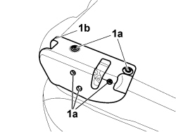
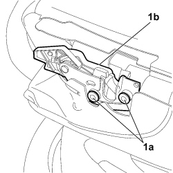

7050A43 SPLIT REAR SEAT ABCKREST ATTACHMENT/LOCKING DEVICE - R.R.
- Path
- Procedures > 70 FITTINGS > 7050 REAR SEATS > 7050A REAR SEAT ASSEMBLY > 7050A43 SPLIT REAR SEAT ABCKREST ATTACHMENT/LOCKING DEVICE - R.R.
- Kind
- repair procedure (removal / refitting; the operation number is the code)
- Applies to
- all engines; all production periods
- Interactive page
- https://sloeber94.github.io/elrnDB-fCrm/en/#/194001148
Applies to: all engines; all production periods
 Removing
Removing
 Refitting
Refitting- Open the rear side door.
- Fold over the rear seat backrest.
1. Undo the fixing bolts (1a) and remove the side trim (1b) from the rear seat backrest.

Applies to: all engines; all production periods
1. Undo the fixing bolts (1a) and remove the attachment/release mechanism (1b) from the rear seat backrest.

Applies to: all engines; all production periods
Refitting
Removing- Place the attachment/release mechanism in its housing and tighten the fixing bolts.
- Position the side trim on the rear seat backrest and tighten the fixing bolts.
- Check the operation of the attachment/release device.